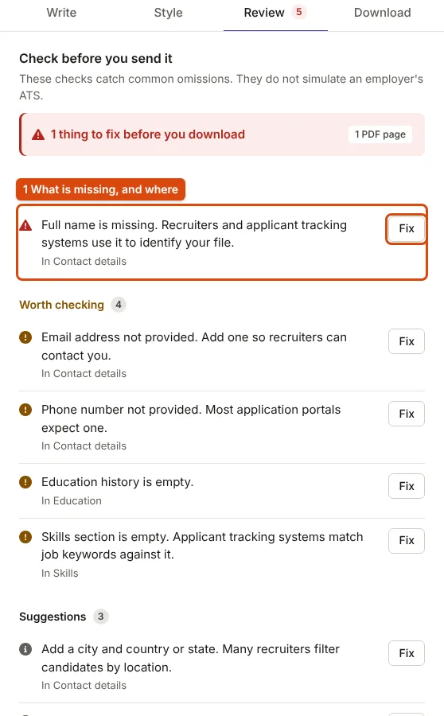

What Goes on a Fresher Resume, Role by Role
Without full-time experience, your evidence is in education, projects and internships. The order stays the same; what you lead with changes by role.
The order of a fresher resume
Without full-time experience, the evidence is in your education, projects and internships, so they come first. The National Careers Service says education can go "after the introduction if you're early in your career", and for a first job "you can focus on skills you've learned through projects, work experience or volunteering" (How to write a CV).
- Contact details: name, phone, email, city, and a LinkedIn or portfolio link if you have one.
- Summary: two or three lines; see writing a resume summary.
- Education: degree, institution, year, and CGPA or percentage, which campus drives often filter on.
- Skills, grouped; see the skills section.
- Projects: two or three, each with a result.
- Internships or training.
- Certifications, achievements and positions of responsibility.

What changes by role
The structure stays the same; what differs is which skills you lead with and what your project bullets prove. The bullets below are illustrative, written to show the shape for each role; the projects are invented, so describe your own.
Software trainee (B.Tech CSE/IT, BCA, MCA)
Lead with: languages, one framework, databases, version control, and the core subjects interviews test (data structures, DBMS, operating systems).
- "Built a placement-drive tracker in React and Node.js used by the college placement cell to record company visits and shortlists."
- "Wrote REST endpoints and MongoDB queries for student registration, and added login with hashed passwords."
Template: Campus Placement / Fresher, or Software Engineer, which puts technical skills under the summary.
Core engineering trainee (mechanical, electrical, civil)
Lead with: design and analysis tools (AutoCAD, SolidWorks, MATLAB), and the subjects relevant to the role.
- "Modelled a bracket in SolidWorks and checked it for stress in a simulation, reducing its weight in the second design iteration."
- "Prepared the bill of quantities for a two-storey building in a group design project."
Marketing trainee (BBA, B.Com, any graduate)
Lead with: channels and tools you have actually used (Google Analytics, Canva, email platforms) and any measured campaign.
- "Ran the Instagram account for the college fest for six weeks and grew followers with a fixed weekly posting plan."
- "Wrote and tested two subject lines for the alumni newsletter and kept the one with more opens."
Accounts or finance trainee (B.Com, BBA Finance, M.Com)
Lead with: Tally, Excel features (pivot tables, lookups), GST and TDS basics.
- "Reconciled three months of bank statements for a family business during an internship."
- "Built an Excel sheet that summarises monthly expenses by category with pivot tables."
Customer support or operations associate (any graduate)
Lead with: communication languages with levels, tools (a ticketing system, a CRM, spreadsheets) and anything that shows reliability.
- "Answered student queries at the college admissions help desk during counselling week."
- "Kept the department's lab inventory in a shared sheet and flagged items to reorder."
For turning these into strong results, see bullet points that show results.
What to leave out
- A generic "Career Objective". Replace it with a summary naming the role.
- Personal details the employer has not asked for: date of birth, marital status, religion, father's name. The UK National Careers Service goes further and says not to include age, date of birth, marital status or nationality. Indian government and some institutional forms do ask for some of these; give them where a form asks.
- A signed declaration at the bottom, unless the employer asks for one. It takes space and adds nothing to a corporate application.
- Skills you cannot discuss. Interviews test the skills list.
Build the resume in the resume builder: the Campus Placement / Fresher template follows the order above, and switching templates keeps what you typed.
Sources
- National Careers Service (UK): How to write a CV, UK government careers service; quoted where its advice applies to applications in India
- National Careers Service (UK): The STAR method, structure for project and internship bullets
Measurements on this page come from running ApplyReady's own tools on the synthetic test images described in the editorial policy. Found a mistake? Report an error.